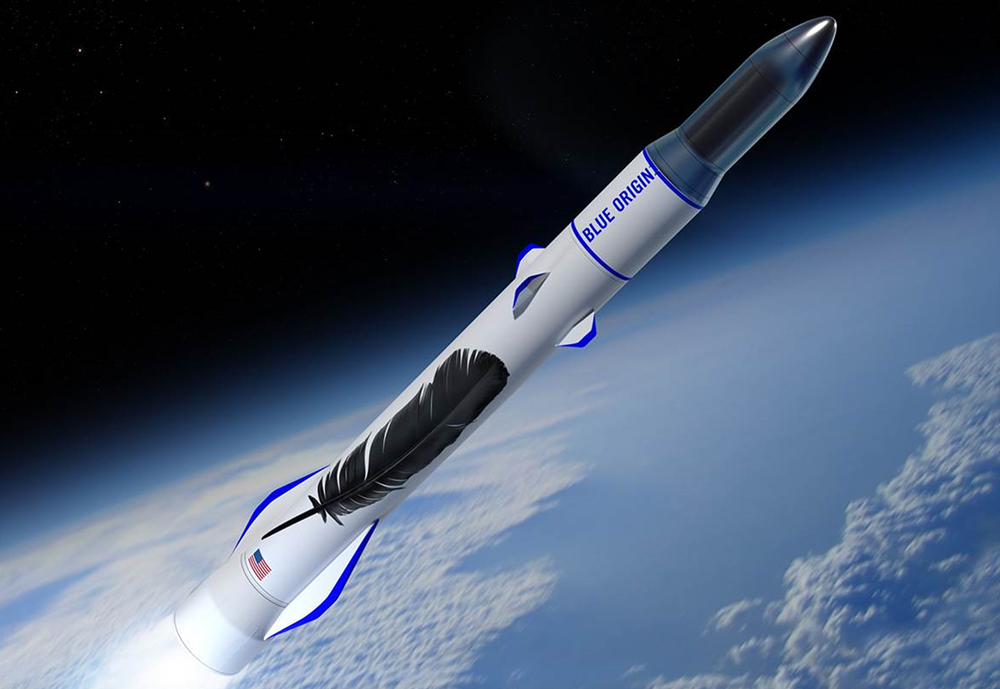
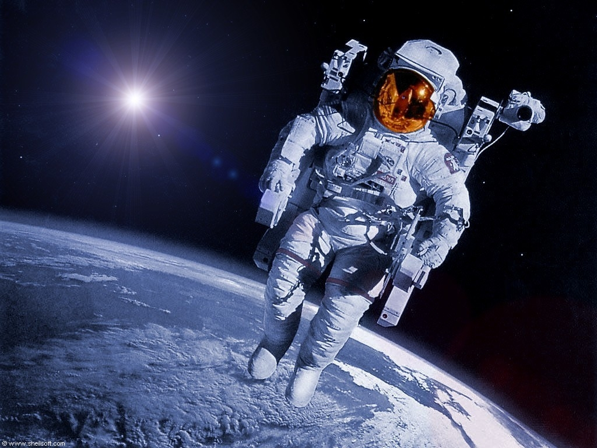
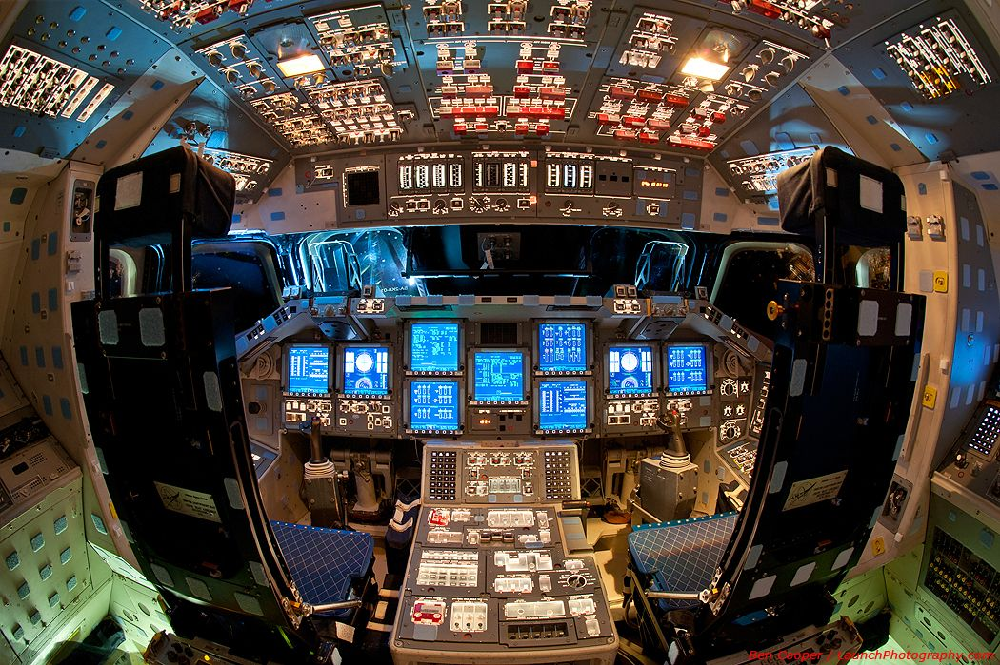

Словарь терминов 🚀
- Ракета - летательный аппарат, двигающийся в пространстве за счёт действия реактивной тяги, возникающей
только вследствие отброса части собственной массы (рабочего тела) аппарата и без использования вещества
из окружающей среды. Поскольку полёт ракеты не требует обязательного наличия окружающей воздушной или
газовой среды, то он возможен не только в атмосфере, но и в вакууме. Словом ракета обозначают широкий
спектр летающих устройств от праздничной петарды до космической ракеты-носителя.

- Космонавт - человек, проводящий испытания и эксплуатацию космической техники в космическом полёте.

- Пилотируемый космический полёт — путешествие человека в космос, на орбиту Земли и за её пределы, выполняемое с помощью пилотируемых космических
аппаратов. Доставка человека в космос выполняется при помощи космических кораблей. Долговременное пребывание людей на орбите Земли обеспечивается
за счёт использования орбитальных космических станций. Людей, совершающих космические полёты, называют космонавтами.
Страны, способные проводить космические полёты на собственных космических кораблях, запускаемых собственными ракетами-носителями,
иногда именуют космическими сверхдержавами. Способности выполнять пилотируемые космические полёты предшествует способность страны,
как космической державы, выполнять запуски на собственных ракетах-носителях собственных спутников. Ввиду требования намного больших экономических и
интеллектуальных затрат и ресурсов число космических сверхдержав намного меньше, чем космических держав.
